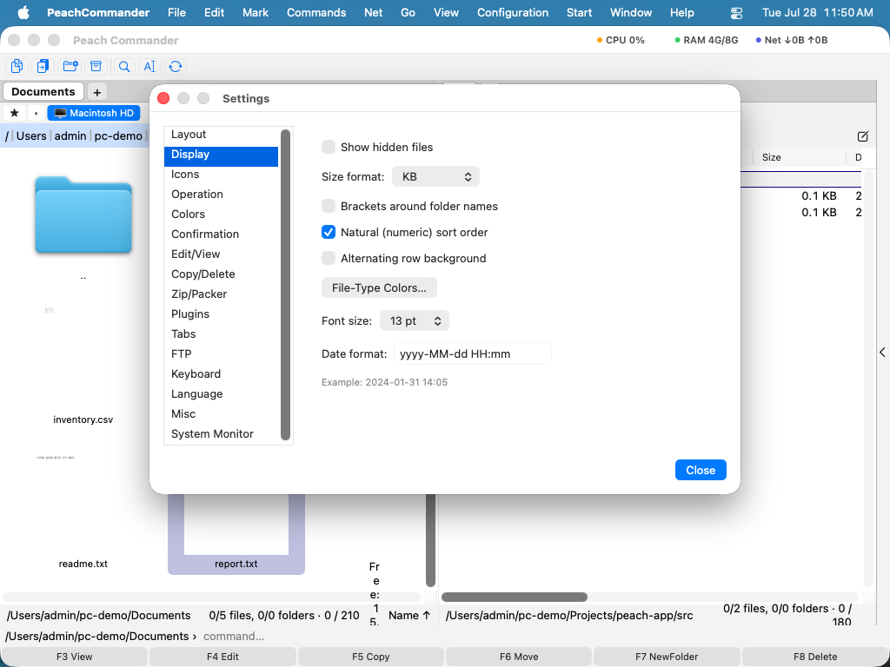

설정
설정 창은 Peach Commander를 자신의 작업 방식에 맞추는 곳입니다: 어떤 막대를 표시할지, 파일을 어떻게 보여줄지, 복사·삭제 동작을 어떻게 처리할지, 압축할 때 쓰는 형식, 탭 동작, FTP 기본값, 표시 언어 등. 설정은 페이지로 묶여 있어 옵션을 빠르게 찾을 수 있으며, 모든 변경 사항은 개인 구성 폴더에 자동으로 저장됩니다.
설정 열기
- Peach Commander > 설정…을 선택하거나 Cmd+,(쉼표)를 누릅니다.
- 설정 > 옵션…에서도 같은 창을 열 수 있습니다.
- 왼쪽 목록에서 페이지를 고릅니다. 해당 페이지의 옵션이 오른쪽에 나타납니다.
- 컨트롤을 조정합니다. 페이지에 다른 안내가 없는 한 변경은 즉시 적용됩니다.
- 특정 옵션으로 바로 가려면 창 위쪽 검색 필드에 입력하세요. 모든 페이지의 일치하는 설정이 해당 페이지 이름과 함께 나열되고, 하나를 고르면 그 페이지가 열리며 설정이 강조 표시됩니다. ↑/↓로 결과를 이동하고, Return으로 강조된 항목을 열며, Esc로 검색을 나가면 원래 보던 페이지로 돌아갑니다.
 (그림: 레이아웃 페이지는 패널 주위에 어떤 막대를 표시할지 제어합니다.)
(그림: 레이아웃 페이지는 패널 주위에 어떤 막대를 표시할지 제어합니다.)
페이지
창에는 다음 페이지가 순서대로 있습니다:
- 레이아웃 — 드라이브 막대, 탭 막대, 경로 막대, 상태 막대를 표시하거나 숨깁니다.
- 표시 — 날짜 형식을 포함해 파일과 폴더가 나열되는 방식.
- 아이콘 — 파일 목록의 아이콘 모양.
- 동작 — 패널에 입력할 때 일어나는 일(빠른 검색 대 명령줄) 같은 일반 동작.
- 색상 — 사용자 지정 패널 색상, 또는 현재 테마를 따르도록 둡니다.
- 확인 — 삭제처럼 먼저 확인을 요청하는 동작.
- 편집/보기 — 편집기에서 저장할 때
.bak백업 사본을 보관할지 여부, 파일을 편집하고 보는 데 쓰는 프로그램과 형식별 연결. - 복사/삭제 — 파일 메타데이터 보존, 빠른 복제 사용, 최신 파일만 복사, 복사 후 검증, 삭제를 휴지통으로 보내기, 선택적 속도 제한 설정.
- 압축(Zip/Packer) — 압축 시 쓰는 기본 압축 형식과 압축 수준.
- 플러그인 — 설치된 플러그인을 켜거나 끕니다.
- 탭 — 폴더 탭이 열리고 동작하는 방식.
- FTP — keep-alive 간격 같은 네트워크 기본값.
- 키보드 — 키보드 단축키를 검토하고 변경합니다.
- 언어 — 시스템 기본값, English, Deutsch 중에서 선택합니다.
- AI — AI 도우미 구성: 선호 모델, 클라우드 엔드포인트와 키, 자율성, 선택적 MCP 서버(참조: AI Assistant).
- 기타 — Finder에서 구성 폴더를 엽니다.
켜진 플러그인은 기본 페이지 다음에 자신의 페이지를 더할 수 있습니다 — 예를 들어 Disk Map과 System Monitor — 그래서 그 옵션이 같은 창에 있습니다(참조: 플러그인).

(그림: 표시 페이지는 파일과 폴더가 나열되는 방식을 제어합니다.) (그림: 동작 페이지는 빠른 검색과 마우스 동작을 관장합니다.)
(그림: 동작 페이지는 빠른 검색과 마우스 동작을 관장합니다.)
설정이 저장되는 곳
구성은 개인 Application Support 폴더 ~/Library/Application Support/PeachCommander 안의 평문 파일에 보관됩니다. 열려면 기타 페이지로 가서 구성 폴더 열기를 클릭합니다. 저장된 FTP 비밀번호는 이 파일에 저장되지 않고 macOS 키체인에 안전하게 보관됩니다.
설정은 변경하는 대로 기록됩니다. 설정 > 설정 저장으로 언제든 강제로 저장하고, 설정 > 위치 저장으로 현재 창 위치와 패널 레이아웃을 저장할 수 있습니다.
Total Commander에서 설정 가져오기
Windows의 Total Commander에서 옮겨 오는 경우 저장된 FTP 사이트를 가져올 수 있습니다. 설정 > wincmd.ini 가져오기…를 선택하고 Total Commander FTP 구성 파일을 고릅니다. 연결이 그곳에 나타났던 순서 그대로 Peach Commander에 추가됩니다.
단축키
| 동작 | 단축키 |
|---|---|
| 설정 열기 | Cmd+, |
참고
- 언어 페이지는 시스템 기본값, English, Deutsch를 제공합니다. 언어 변경은 Peach Commander를 다시 시작해야 적용됩니다.
- 색상 페이지에서 설정한 색상은 테마를 덮어씁니다. 테마 색상으로 돌아가려면 그곳의 기본값으로 재설정을 사용하세요.
- Peach Commander는 설정을 자체 구성 폴더에만 저장하므로 변경이 다른 앱에 영향을 주지 않으며, 그 폴더를 복사해 쉽게 백업할 수 있습니다.